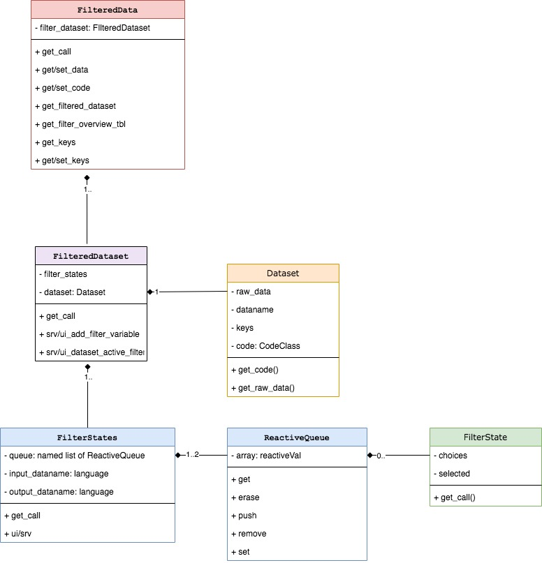

Filter panel
Dawid Kałędkowski
8/11/2021
filter_panel.RmdOverview
Filter panel is located in the right side of the teal apps and is responsible for filtering data globally for whole application. Filter panel is entirely encapsulated within FilteredData class, which manages filter states, data filtering and reproducible filter code. Filter panel is composed of several classes but FilteredData is the only class which app developer will face directly. FilteredData is accessible in teal modules as a dataset argument.

FilteredData contains one-to-many FilteredDataset objects which contain TealDataset passed from TealData after all datasets are loaded. While FilteredData manages whole filter panel, FilteredDataset is responsible for single dataset filtering. Depending on a variant of FilteredDataset it can contain one or many FilterStates. FilterStates class object has one or two ReactiveQueue where FilterState objects are stored. FilterState is a single filter applied to one variable/column while FilterStates is a collection of filters combined within single filter call.
Initialization

FilteredData is initialized in srv_teal when TealData$is_pulled() returns TRUE. FilteredData is dispatched on type of TealData, and if DDL is CDISCTealData then CDISCFilteredData is initialized. Each TealDataset from CDISCTealData determines the type of the FilteredDataset. In above diagram CDISCTealDataset initializes CDISCFilteredDataset and MAETealDataset initializes MAEFilteredDataset.
Most complicated concept in the new filter panel is FilterStates, which are initialized in FilteredDataset. The type and number of FilterStates depends on the data kept in the FilteredDataset. You can imagine FilterStates as one subset call. In case of data.frame (DFFilteredDataset) case is simple, because we know that single dplyr::filter call is sufficient to subset data rows. Consider MultiAssayExperiment object which contains patients data in @colData and multiple experiments in @ExperimentList. Because MultiAssayExperiment contains multiple objects and each must be filtered by separate call, this is why multiple FilterStates objects are required for MAEFilteredDataset. ReactiveQueue are created within FilterStates and their number also depends on the FilterStates type.
Described objects are created instantly when data is loaded and they remain unchanged, whereas FilterState is initialized each time when the new filter is added. Values of the FilterState can change and also it can be removed and added once again.
Classes description
This section describes in detail each class managing filter panel.
FilteredData

FilteredData is exposed to the apps/modules developer as a dataset argument in the modules. FilteredData manages filter panel by returning filtered data, combining reproducible filter call from FilteredDatasets. FilteredData also contains all shiny modules displayed on the right panel in teal apps. FilteredData is a single object which is initialized in srv_teal module and it’s variant depends on TealData. If DDL returns CDISCTealData then CDISCFilteredData is initialized, otherwise FilteredData.
In the analytical modules datasets can be used to:
- obtain filtered and unfiltered data using
datasets$get_data(<dataname>, filtered = <TRUE/FALSE>). - get available datanames using
datasets$datanames() - get reproducible filter call using
datasets$get_call(<dataname>) - get reproducible data loading call
datasets$get_code(<dataname>) - get
JoinKeysbetween two datasets usingdatasets$get_join_keys(<dataname1>, <dataname2>) - get variable labels using
datasets$get_varlabels(<dataname>) - get parent dataset name using
datasets$get_parentname(<dataname>)(only in case ofCDISCFilteredData)
FilteredDataset

FilteredDataset is a class which keeps unfiltered data and returns filtered data based on the filter call derived from FilterStates. FilteredDataset class objects are initialized by FilteredData, one for each TealDataset. FilteredDataset contains single TealDataset object and one-to-many FilterStates depending on the type of object. FilteredDataset stores dataset attributes, join keys to other datasets, and also combines and executes the code taken from FilterStates.
Following FilteredDataset derived classes are already implemented:
-
DefaultFilteredDatasetdispatched byTealDatasetto manage filters fordata.frameobject. -
CDISCFilteredDatasetdispatched byCDISCTealDatasetto manage filters fordata.framematching ADAM standards. -
MAEFilteredDatasetdispatched byMAETealDatasetto manage filters forMultiAssayExperimentobject.
FilterStates

FilterStates are initialized by the FilteredDataset when teal app starts. The type and number of FilterStates depends on the type of data included in TealDataset. If data in FilteredDataset is composed of multiple objects then the equivalent number of FilterStates is initialized. One FilterStates object is responsible to make one subset call. Consider the case of MultiAssayExperiment object which contains multiple experiments and patients data stored in separate slots. Each of the objects within MultiAssayExperiment can be filtered by separate calls. Each sub-element in TealDataset needs also separate inputs to select subset variables, which then should be applied to the same sub-element of the TealDataset.
Currently following variants are possible:
-
DFFilterStatesdispatched bydata.frame, usesdata.framecolumns for filtering. -
MAEFilterStatesdispatched byMultiAssayExperiment, uses columns of object kept in@colDataslot for filtering. -
SEFilterStatesdispatched bySummarizedExperiment, uses columns of objects kept in@colDataand@rowDatafor filtering. -
MatrixFilterStatesdispatched bymatrix, usesmatrixcolumns for filtering.
FilterStates serve two Shiny related purposes:
-
ui/srv_add_filter_stateallow to addFilterStatefor selected variable. Variables included in module are the filterable colnames of provided dataset. Variable selection addsFilterStatetoReactiveQueue(stored in listprivate$queue[[queue_id]]).FilterStateis dispatched automatically on a selected column class.
FilterState

This class controls single filter card and returns condition call depending on what is selected. FilterState is initialized each time when user selects filter variable in FilterState$add_filter_variable module. FilterState is dispatched on type of selected variable. Depending on a type of filter state, there are different UI inputs - for example only numeric has use_inf checkbox button. private$selected, private$use_na, private$use_inf are reactive values and they trigger re-execution of FilterState$get_call whenever their values change. Constructor if FilterState has extract_type argument which impacts returned call. extract_type can be unspecified, "matrix" or "list" and it’s value corresponds to type of the variable prefix in returned condition call. For example if FilterState is initialized with extract_type = "matrix" then variable in condition call looks like <input_dataname>[, "<varname>"].
Making reproducible filter call
Overview

Above diagram presents filter panel classes and their responsibilities when composing filter calls.
-
FilterState$get_call()returns single condition call based on single variable -
ReactiveQueueis a container which stores multiple condition calls.ReactiveQueueobjects are kept in list where the names of each element is named after argument name. -
FilterStates$get_call()returns single filter call by gathering conditions returned fromFilterStateand combining them by&operator grouped by argument name. -
FilteredDataset$get_call()returns the list of calls taken fromFilterStatesobject(s). -
FilteredData$get_call(<dataname>)returns list of calls from specifiedFilteredDataset.
Example

Calling datasets$get_call(<dataname>) in teal modules executes chain of calls in all filter panel classes. Consider scenario in which:
FilteredDatahas threeFilteredDataset(s) ADSL , ADTTE, MAECDISCFilteredDatasetcontainsdata.frame(ADSL) which can be filtered only in one way executing singledplyr::filtercall (this is whyCDISCFilteredDatasethas a singleFilterStates)FilterStatesconstructdplyr::filtercall is based on theFilterStateobjects added to theReactiveQueue.ReactiveQueueis just a class to manage addition, storage and removal ofFilterStatesobjects. This is it’s only responsibility and the class does not generate any code.DFFilterStatecontains only oneReactiveQueuewhich is not named - this tellsFilterStatethat calls from eachFilterStateshould go to unnamed argument indplyr::filter.When end-user chooses some variable in “Add Filter Variable” section, then new
FilterStateis added to theReactiveQueueand this new conditions are added todplyr::filter(ADSL, ...)call. In the exampleSEXandAGEhas been added - which are automatically dispatched to relevantFilterStateclass (ChoiceFilterStateandRangeFilterState). Since (5) have been added or changed, conditions (SEX == "F"andAGE >= 20 & AGE <= 60) are returned to theDFFilterStates(3) which combines them with&operator and puts todplyr::filtercall.CDISCFilteredDatasettakes this one call and return toFilteredDataas a list.Second
FilteredDatasetforADTTEworks the same way asADSLwith one difference.dplyr::filterforADTTEis followed by the merge call withFILTERED_ADSL- to be filtered by keys available parent.FilteredDatasetMAEis based onMAETealDatasetwhereraw_datacontains multiple object which can be filtered on. In generalMultiAssayExperimentcontainscolData(MAE)which is aDataFramewith ADSL-like patient data.MAEcontains also multiple experiments which can be extracted usingMAE[["experiment name"]]and they can also be filtered in filter-panel. This means thatFilteredDatasetMAEhas multipleFilterStatesobjects: one for subjects data and one for each experiment.MAEFilterStatesobject is initialized for subjects data and for this objectSummarizedExperiment::subsetByColDatafunction is applied.SummarizedExperiment::subsetByColDatahas two argumentsx(data) andy(conditions).MAEFilterStatessimilar toDFFilterStateshas oneReactiveQueue(9) list foryargument in the function. Adding newFilterStatestriggers returning of the code similar to (4) and (5)SEFilterStatesis initialized per one experiment in the MAE data. This class is specific becauseSummarizedExperimentcontainscolDataandrowDatawhich correspond toselectandsubsetarguments insubset.SummarizedExperimentfunction. Similar tosubset.data.framesubsetrefers to the rows in the object, andselectrefers to the columns - but the call execution is little different because subsetting and selecting call refers to columns incolDataandrowData(objects attached to this experiment).